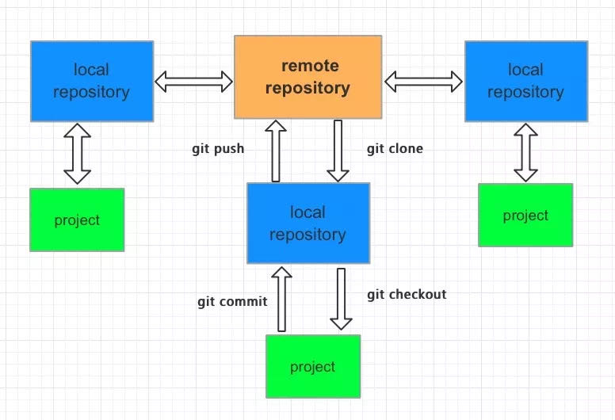

Git是当下应用最为广泛的VCS, 日常的开发工作过程中总免不了要和它打交道，以下是一些工作中常用的git命令操作的记录整理
1. 什么是Git
众所周知，Git是由Linus Torvalds最初开发的分布式版本控制系统(Version Control System)软件。其最初是作为帮助解决Linux内核开发代码管理问题这一目的而问世，是一种用来替代BitKeeper的过渡方案。相比于SVN这样集中式的VCS, Git允许团队中的开发者们在本地建立代码仓库和分支，并提交代码到本地仓库，最终再推送到远程仓库并合并分支。其他成员再通过拉取远程仓库代码的方式以获取全部更新。其一大特点便是支持离线工作。
2. Git的基本工作流程
一图以蔽之

其中本地仓库又分为
- 工作区(working tree) 磁盘上的实际文件目录
- 暂存区(index/stage) 缓存区，保存本地的临时改动
- 仓库区(repository) 仓库区，保存有本地真正已提交的改动
3. Git的日常常用操作
1 | 1. git init |
初始化本地目录为一个git仓库，通常当前目录会有一个隐藏的 .git 文件夹作为标志
1 | 2. git add <filename> |
添加某个具体文件到git缓存区
1 | 3. git commit -m "commit message" |
将Git暂存区中的文件提交到本地仓库，-m 参数后带上提交信息
1 | 4. git fetch |
将远程仓库的最新内容拉取到本地
1 | 5. git merge |
将拉取到的内容与本地内容进行合并
1 | 6. git pull |
git pull可以看作是 git fetch + git merge, 即拉取远程仓库最新内容并合并到本地
1 | 7. git push origin <branch> |
推送本地仓库中提交的新内容到远程仓库的指定分支上
1 | 8. git rm <filename> |
删除工作区中当前指定文件，并将改动保留到暂存区中去
1 | 9. git mv <filename> <new_filename> |
重命名工作区中的指定文件
1 | 10. git clone <url> |
将指定路径的远程仓库克隆到本地文件目录
1 | 11. git checkout <[filename|.]> |
放弃暂未加入到缓存区的本地文件修改，重新代以远程仓库版本，可以指定具体某个文件
1 | 12. git status |
查看当前本地暂存区的状态
1 | 13. git log --author=someone |
查看版本仓库提交记录，author 参数可以指定具体看某个人的记录
1 | 14. git diff <commit_id_1> <commit_id_2> |
比较两次提交之间的异同
1 | 15. git reset [--mode] <commit_id> |
有时候可能会手抖将一些错误内容给commit了，这时想回滚掉错误提交就可以使用 git reset命令加commit的SHA1值 回退到具体某一次的commit. 其中mode即模式，默认情况下是mixed模式，还有另外两种hard 和 soft 模式，他们之间的区别可以另查资料。
1 | 16. git revert <commit_id> |
和git reset不同的是，git reset是指定回滚到某个具体的提交版本，而git revert是回滚掉某个具次具体的提交版本，比如当前有
1 | graph LR |
三次提交记录，其中B提交包含错误，不想要了，那么就可以git revert “B的commit id” 移除掉B提交，并且这将新建一个commit,将HEAD指针指向C提交的下一次位置。形如：
1 | graph LR |
1 | 17. git config |
可以对当前的git仓库作一些配置修改，配置文件放置在 ~/.gitconfig中
注：图片资源来自网上，侵删